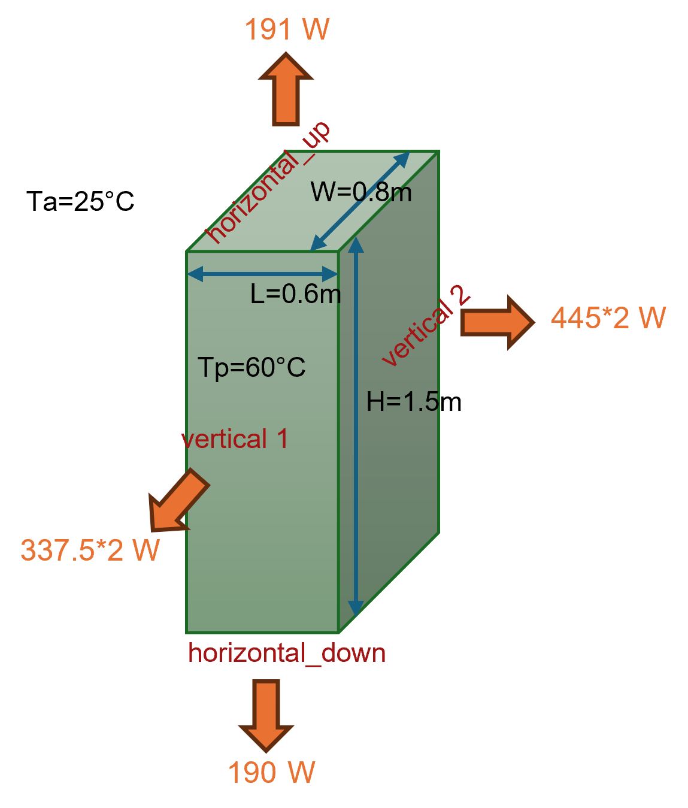

Corps parallélépipédique
Usage
{kind=link}

from HeatTransfer import ParallelepipedicBody
# Définir la configuration thermique de chaque face
thermal_measurements = {
'top': {'Tp': 60.0, 'isolated': False},
'bottom': {'Tp': 60.0, 'isolated': False},
'front': {'Tp': 60.0, 'isolated': False},
'back': {'Tp': 60.0, 'isolated': False},
'left': {'Tp': 60.0, 'isolated': False},
'right': {'Tp': 60.0, 'isolated': False}
}
# Créer l'objet
objet = ParallelepipedicBody.Object(
L=0.6, # Longueur [m]
W=0.8, # Largeur [m]
H=1.5, # Hauteur [m]
Ta=25, # Température ambiante [°C]
faces_config=thermal_measurements
)
# Calculer les transferts
objet.calculate()
# Afficher les résultats
print(f"Transfert total: {objet.get_total_heat_transfer():.2f} W")
print(objet.df)
Results
Transfer total: 1956.56 W
Face Orientation Surface (m²) Tp (°C) Ta (°C) ΔT (°C) Isolated Heat Transfer (W) Heat Flux (W/m²)
0 top Horizontal (up) 0.48 60.0 25 35.0 False 191.19 398.31
1 bottom Horizontal (down) 0.48 60.0 25 35.0 False 189.98 395.80
2 front Vertical 1.20 60.0 25 35.0 False 450.11 375.09
3 back Vertical 1.20 60.0 25 35.0 False 450.11 375.09
4 left Vertical 0.90 60.0 25 35.0 False 337.58 375.09
5 right Vertical 0.90 60.0 25 35.0 False 337.58 375.09
6 TOTAL - 5.16 - 25 - - 1956.56 379.18
Le calcul retourne :
Transfer thermique total : Somme des pertes by toutes les faces [W]
DataFrame détaillé : Pour chaque face (top, bottom, front, back, left, right)
Surface [m²]
Temperature de paroi [°C]
Coefficient de convection [W/m²·K]
Transfer by convection [W]
Transfer by rayonnement [W]
Transfer total by face [W]
Paramètres possibles
Configuration des faces (dictionnaire faces_config) :
Chaque face peut avoir :
'Tp': Temperature de paroi [°C]'isolated':TrueouFalse(face isolée ou non)
Faces disponibles : 'top', 'bottom', 'front', 'back', 'left', 'right'
Explication du model
Ce model calcule le transfert thermique d’un corps parallélépipédique (boîte rectangulaire) to l’environnement ambiant.
Le calcul prend en compte :
Convection naturelle : Échange thermique between la surface et l’air ambiant
Rayonnement : Émission de chaleur by radiation to l’environnement
Pour chaque face, le model :
Calcule la surface d’échange
Détermine le coefficient de convection according to l’orientation (horizontale/verticale)
Calcule les flux de convection et de rayonnement
Somme les contributions for obtenir le transfert total